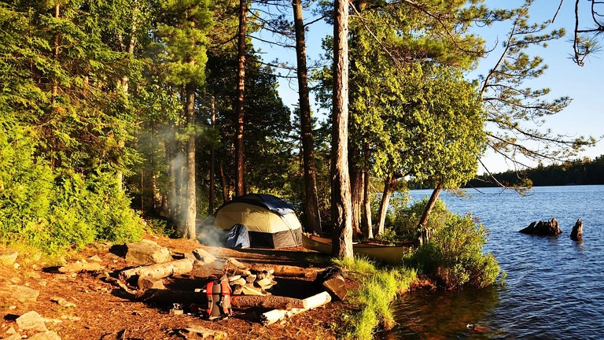

How to Set Up a Campsite

If you are new to camping, here are some tips that can teach you how to set up a campsite.
The first thing you’ll need to is find the perfect campsite. It’s best to choose a site that is fairly elevated. Not only can it provide a good view, but it can keep your tent from standing in water if it should rain. It is also a good idea to locate a site that is fairly close to restroom facilities and dump stations.
Once you’ve chosen your campsite go through the area and remove anything that will get in your way. Rocks and sticks should be removed to provide a smoother surface for your tent. If there’s a picnic table in the campsite move it to best suit your needs. For example, if the picnic table is in the best spot you may want to move it so your tent can go there.
Place a tarp beneath your tent. Make sure it adequately covers the area where you’ll be placing your tent. Set up your tent, and be sure the tent doors are facing the direction you want. Next place another tarp on your tent’s floor. This will serve as added protection if it rains. It’s best to use a tarp that is slightly larger than your tent floor. This will enable it to run up the sides of your tent a bit.
Put your cots, mattresses, blankets, sleeping bags, clothes, and whatever else you want inside your tent. Arrange it in a way that is convenient. If you have any overhead tarps or canopies that you want to hang, do so now.
Now it’s time to set up your outdoor area. You should have brought a small table with you to hold items such as your cooking stove, water jugs, picnic supplies, and more. Put your table in a convenient area such as next to your picnic table. You can place your coolers beneath this table or on the seating area of the picnic table.
Strategically place your camping lanterns. It’s a good idea to place one around the picnic area and one next to the tent. Ideally, a lantern pole works best for the lantern, while the one near the picnic area can be set on the table.
Before you leave your campground to return home, make sure you leave no trace of yourself behind. Pick up all trash and make sure it’s disposed of properly. Leave the campsite as you found it or even better than it was if you found it littered. Don’t leave smoldering coals. Make sure your campfire is completely out.